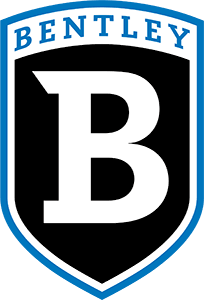

Atlantic Hockey
 Sacred Heart
Sacred Heart
Sacred Heart is 6-7-0 and 47th in the NPI. Across 500 simulated seasons its median NPI finish is 36th, with a 95% range of 15th to 55th. ELO expects about 6 wins in the next 10.
Next 10 games
- Sat, Nov 21
 vs Robert Morris60%
vs Robert Morris60% - Tue, Dec 1
 at Brown58%
at Brown58% - Fri, Dec 4
 at LIU55%
at LIU55% - Sat, Dec 5vs LIU69%
- Tue, Dec 29
 vs Yale68%
vs Yale68% - Sat, Jan 2at Canisius51%
- Sun, Jan 3at Canisius51%
- Fri, Jan 8
 vs Air Force63%
vs Air Force63% - Sat, Jan 9vs Air Force63%
- Fri, Jan 15

at Bentley39%
Win chances from ELO; the dot is stronger the more lopsided the game.
Projected NPI finish
500 simulated seasons, remaining games decided by ELO win chances. Dashed line: median. Shaded: 95% range.